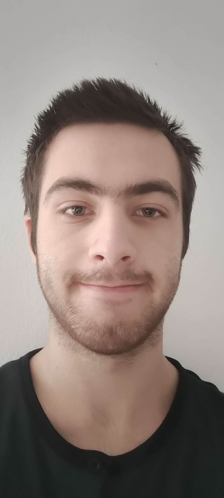

 Sono Cesare Falzone, un ragazzo di 20 anni nato a Genova il 4 marzo del 2003. Sono diplomato in Informatica e Telecomunicazioni nell'istituto tecnico industriale Majorana-Giorgi con un voto finale di 70/100.